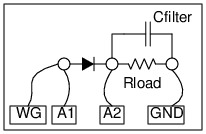

Schematic

Instructions
- Connect the diode, without resistor, and observe the rectified output.
- Add the resitor and see the change in the amplitude.
- Connect capacitor to see the effect of the filter. Change Rc values and repeat.
(Do not use R below 500 Ohm)